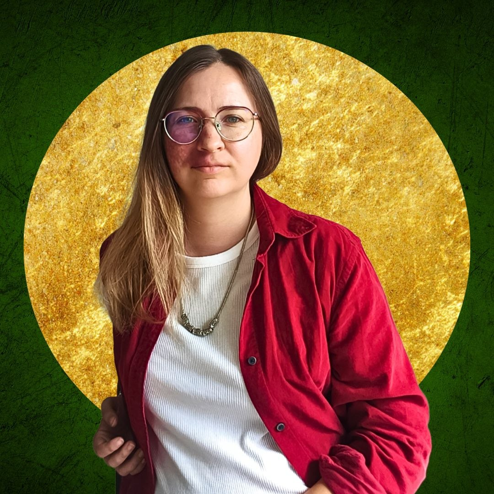
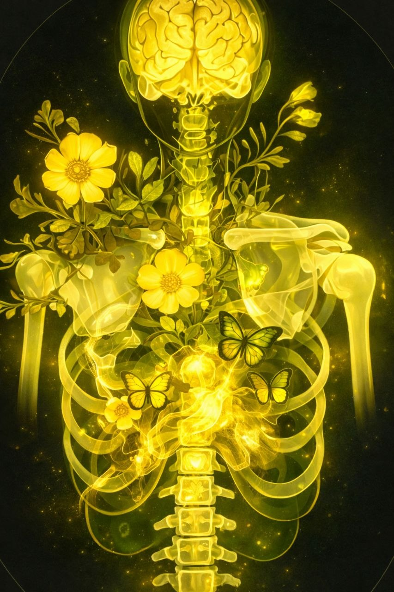
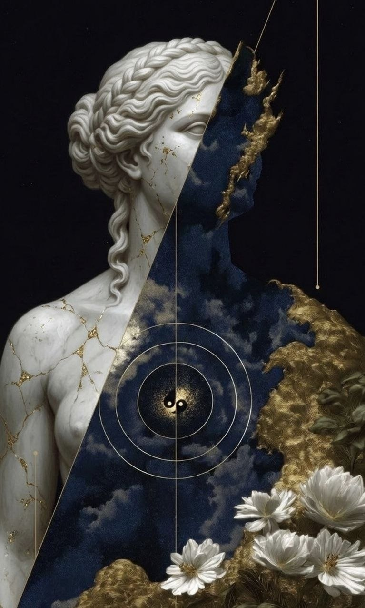

⟁ Духовне Енергетичне Вирівнювання
→
☥ Сесія Тілесного Відновлення
→
❂ Многомірна Керована Медитація
→

Мене звати Надія. Я — майстер духовних практик і цілитель енергетичних полів. Мій шлях розпочався з власного пошуку — пошуку себе, своєї сили та свободи проявлятись у цьому світі.
Я не заспокоюю — я пробуджую. У кожній людині є іскра, яка чекає на момент, коли їй дозволять горіти на повну.
Моя робота — це глибинна трансформація через роботу з тілом, енергією та свідомістю. Я супроводжую жінок до тієї версії себе, яку вони давно відчувають, але ще не наважилися показати.
Система «DNK Sun Art» — це авторський підхід, що поєднує древні практики з сучасним розумінням психосоматики та енергетики.
Енергетичне очищення: Це робота з усією енергетичною системою: з полями, меридіанами, торсіонними й магнітними потоками, каналами, через які циркулює енергія. Ми очищуємо й відновлюємо природний рух енергії, знімаємо спотворення.
Чакральне очищення: Робота з енергетичними центрами тіла, де накопичується й розподіляється прана — життєва сила. Ми працюємо саме з тим, що потрібно тобі зараз. Іноді з однією чакрою, іноді — з усіма.
Я працюю з чакрами за унікальною системою! З такою ви, найімовірніше, ще не стикалися.
Це 4 медитації, створені як єдина цілісна структура. Кожна з них має своє унікальне завдання, настрій і енергетичну хвилю. Вони прослуховуються у певній послідовності, щоб поступово перепрошити ваші внутрішні установки, ритми й сприйняття часу.
Для тих, хто:
✧ відчуває, що часу постійно не вистачає
✧ хоче вийти з режиму поспіху та напруги
✧ бажає навчитися співпрацювати з часом
✧ шукає нові відчуття простору та розширення
✦ У вартість входить підтримка протягом всієї практики (більше 2-ух місяців).
Це телеграм-канал з моїми авторськими медитаціями — живим діалогом із тілом. Кожна з них — м'який шлях до зцілення, відчуття й гармонії. Канал наповнюється новими медитаціями постійно.
Структура моїх медитацій особлива. Я веду в глибину тіла:
проживання → запитання → проживання
Так народжується діалог. А в діалозі завжди з'являється істина — твоя.
Деякі ситуації мають не одну причину, а декілька, які сформувались через накопичення роками. І це такий симбіоз ситуацій та станів, який проявив уже на фізиці чи психіці в матеріальний світ.
Тому медитацію потрібно прослухати декілька разів, для того щоб закрити нашарування. З кожним прослуховуванням закривається пласт.
І для закріплення певного стану, з яким ми знайомимось, щоб він плавно ввійшов у наше життя і залишився в ньому з легкістю, потрібно прослуховувати певний час.
Тіло пам'ятає все. ✧ Навіть те, що ви хотіли б забути чи таки забули. Наприклад: у дитинстві каталися з гірки на санчатах та пошкодили плече. У дорослому віці людина не зможе або не в повній амплітуді робити вправу на підйом рук вгору (буде роздратування на цю вправу або небажання її виконувати).
Ментальні тіла (тонкі) ✺ також пам'ятають все. Навіть те, що було в утробному періоді.
Все, що ми накопичуємо в тонких тілах, згодом опускається в тіло (матеріалізується). ⟁
Все, що було, не прожито, не побачено, не дали цьому уваги та важливості; пішли, закрилися, стерли з пам'яті, це створює відбитки в ефірних (тонких) тілах.
Всі ми знаємо, що всі хвороби від "нервів", стресу. Насамперед "нерви" зароджуються від нашої ментальної частини, простіше кажучи думки.
Думка первісна, вона призводить до емоцій.
Емоції це насамперед енергія ✺, яку наше тіло проживає фізично. Воно може її пропустити через себе та прожити, а може десь у тілі закапсулюватись і це втілитися у вигляді затиску, спазму чи інших хвороб.
Емоції - подібні до запущених програм, які керують вами сьогодні.
Причому часто такі реакції живуть і "налаштовуються" у вас роками, таким чином, що в результаті ви їх просто перестаєте помічати, приймаючи їхній вплив як належне.
Емоції реагують не тільки на реальні події, але також на ті, які вже залишилися в минулому, і ті, які ще не відбулися і навіть не обов'язково відбудуться. ❂
І якщо до емоцій почати ставитися як до енергії, то можна навчитися її перетворювати з одного виду в інші, або випускати затиснуті емоції, що застрягли в тілі, щоб випустити, не дати перейти в хворобу.
Будь-яка думка людини заряджена певною емоцією і тому має певну енергію.
Коли людина хворіє, організм автоматично починає вібрувати на нижчих частотах. Кожна емоція має свій хвильовий вплив на тіло.
I. Підняти рівень вібрацій спочатку у хворому місці.
II. Підняти вібрації по всьому організму.
Для мозку ❂ немає значення, проживаєте ви якусь ситуацію наяву чи лише у думках.
Кожна наша думка — це електричний імпульс, який миттєво активує масштабну біохімічну реакцію. Як тільки ви про щось подумали, мозок виділяє нейропептиди — хімічні посланці.
Подумали про щось радісне? Гіпоталамус відправляє в тіло порцію дофаміну та окситоцину. Тіло розслабляється, імунітет зміцнюється.
Крутите в голові тривожний сценарій або образу? Мозок б'є на сполох і дає команду наднирникам: «Небезпека!». У кров викидаються кортизол та адреналін. Судини звужуються, м'язи напружуються, дихання стає поверхневим.
Якщо ви відчуваєте короткочасний одноразовий стрес від загрози (короткочасний переляк) — хімічна реакція триває недовго, і тіло швидко повертається до балансу.
Коли ж ви щодня «жуєте» образи, страхи за майбутнє чи невдоволення собою? Ви тримаєте свій організм у стані хронічної хімічної тривоги.
Так невидима думка, з часом ущільнюється і стає фізичним симптомом, хворобою. Тіло бере удар на себе, матеріалізуючи те, з чим не впоралася психіка.
Коли ми, наприклад, регулярно гніваємося, наднирники постійно виділяють норадреналін. Цей гормон систематично б'є в одну й ту саму "мішень" у тілі. Норадреналін, зокрема, сильно спазмує шлунок, і з часом такий постійний вплив може призвести до гастриту.
Оскільки ми часто не можемо впоратися з першопричиною гніву, цей процес зациклюється і створює хворобу. Певні емоції запускають одні й ті самі хімічні реакції, які зношують конкретний орган. ☥
Інший приклад — людина не висловлює те, що думає і пригнічує гнів. М'язи шиї спазмуються, створюючи той самий фізичний «ком у горлі». Звісно, це може бути суто проблемою зі щитовидкою. Але часто це наслідок невимовлених слів та стриманих емоцій.
Ваше тіло — це ідеальна, саморегульована система. Якщо наші думки здатні зробити нас хворими, вони також здатні нас зцілити. ✦
Тому, якщо ви пройшли обстеження і вам сказали, що зі щитовидкою все гаразд — час працювати з першопричиною.

Це потужний і глибокий енергетичний процес, який запускає внутрішні процеси в тілі та повертає його у природну рівновагу.
Вирівнюються тонкі енергетичні поля, гармонізуються всі системи тіла, а потоки енергії налагоджуються й починають текти рівномірно та збалансовано.
У цьому стані з'являється внутрішня опора, спокій і ясність.
Починаючи з тілесних — хребта, а під хребет з часом підтягуються й інші структури тіла: структури кровоносної системи, лімфатичні потоки, м'язи розслабляються скидаючи напругу.
Вирівнюються також енергетичні поля та системи.
Вирівнюється саме те, що вже готове і може бути вирівняне на теперішній момент.
Тобто, якщо щось має значення зараз або в майбутньому — воно не буде змінене. Змінюється тільки те, що вже віджило.
Тому що є системи, які будуть готові до змін лише після того, як зміниться щось інше. І тому спочатку вирівнюється там, а потім, як бусинки, нанизуються на ці зміни — інші.
Якщо ж впроваджувати їх завчасно, система тіла, ментальна, енергетична чи емоційна може бути не готова, і це буде травмою.
Спеціальної підготовки не потрібно. Потрібна лише твоя готовність іти в нове і довіра до мене як до майстра.
Сеанс триває близько 60 хвилин:
з них 15-30 хвилин ми знайомимось, спілкуємось,
і 15-30 хвилин триває енергетичний сеанс.
Тобі потрібно лягти і залишитися на цю годину наодинці.

I. Пошук кореня.
Ми пірнаємо у глибину історії тіла, знаходимо програму або подію, що створила напругу - і переписуємо її. Вам потрібно лише розслабитись і довіритись моєму голосу.
II. Енергосесія.
Я піднімаю вібрації у зоні, що просить турботи, розширюю їх по всьому тілу, запускаю природну програму зцілення.
Не вживати алкоголь за 3 дні до і після сеансу.
Також виділіть для себе приблизно півтори години, щоб вас ніхто не відволікав і ви могли побути в спокої. Подбайте про місце, де вам буде зручно лягти — більша частина сесії проходить саме лежачи.
Насправді тіло завжди на твоєму боці.
Воно — твій вірний помічник і воно робить лише те, що колись було необхідно, щоб тебе захистити.
І коли тіло повертається у стан відновлення, зникає потреба постійно змушувати себе.
Натомість з'являється природний імпульс діяти з місця внутрішньої підтримки.

Це сесія енергетичної практики, яка допомагає зрозуміти, звідки «ростуть ноги» у ситуації, яка для нас незрозуміла.
Тієї, яку роками не можете розгадати.
Саме в Многомірній КМ ми знаходимо корінь ситуації, звільняємось від програми, яка її створює, і перекриваємо новим станом - тим, який формує вже нові ситуації, потрібні саме вам для реалізації.
Многомірна Керована Медитація - місце, де минуле перестає керувати теперішнім ✦
Працюю з ситуаційними, тобто: одні й ті ж граблі, зацикленість, ніяк не можу побачити у чому причина, тут ми підіймаємо на поверхню те, що не можемо сприйняти свідомо.
Ця сесія для Вас, якщо ви відчуваєте, що ваша проявленість блокується не тільки страхом чи сумнівами, а глибшими внутрішніми програмами, які складно змінити звичайними розмовами з собою.
Це одна сесія для одного запиту - не курс сесій, не декілька, а одна.
Ми за один сеанс змінюємо один запит. Многомірна КМ працює безпосередньо з енергетичним «коренем», тому нам не потрібно обговорювати проблему місяцями.
Ми не шукаємо «особливі відчуття».
Ми виходимо на точку, з якої почала формуватись ваша внутрішня історія, ваш сценарій і ваш спосіб реагування.